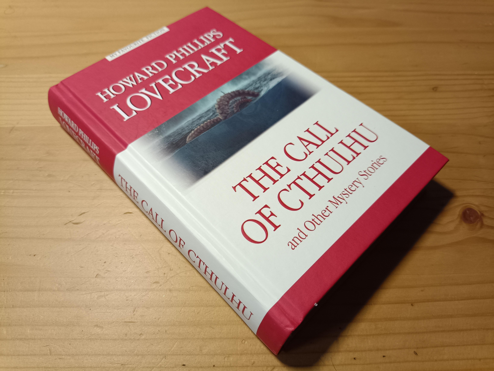
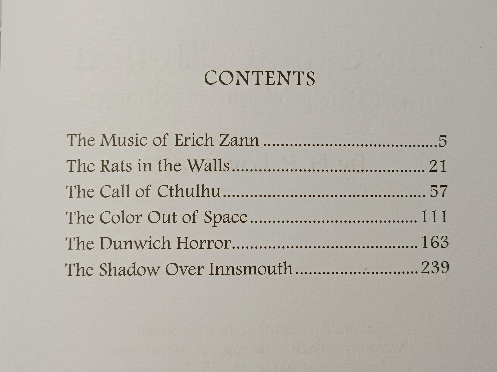
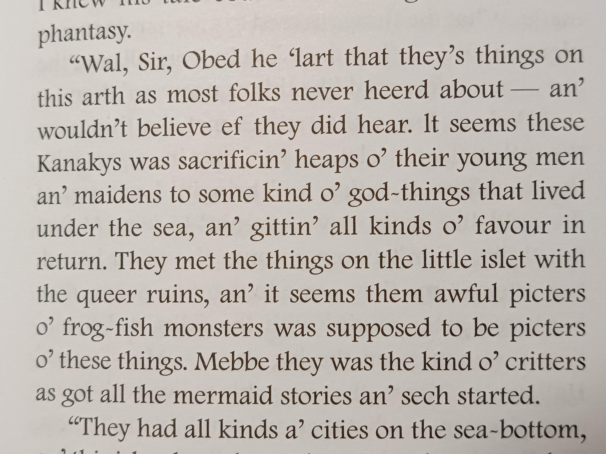

The Call of Cthulhu

Дочитал на днях один занимательный сборник.
Со сборниками Лавкрафта есть довольно сложная история. При жизни он публиковался только в журналах. А полные собрания всех его произведений обычно очень толстые (~1000 страниц среднего размера). В этом же сборничке (350 страниц малого размера) собрали неплохую компашку. Присутствуют самые известные произведения — “The Call of Cthulhu” и “The Shadow Over Innsmouth”. А наряду с ними поставили произведения, не менее значимые для построения духа этой кошмарной вселенной.

Да, большая часть произведений Лавкрафта находится в едином контексте. Оно и понятно, основной референс Лавкрафта — древние верования, в частности, языческие. В таких традициях есть много небольших историй про одни и те же божества и иные сверхъестественные сущности.
Мне же особенно хочется отметить “The Music of Erich Zann”. Это первое произведение в сборнике. Оно же, по словам самого Лавкрафта, было из его лучших. Почему? Там не было деталей. Фокус на чём-то неосязаемом и вне поля человеческого понимания, что, мне кажется, отлично получилось передать. Это прекрасный пример того, когда читатель сам себе додумает более захватывающую и ужасную картину, чем если бы всё было детально расписано.
В целом, конкретно это издание очень приятное. Как и с предыдущей книгой от “Антологии”, качество бумаги и печати хорошее. Текст оригинальный, а не адаптированный. Сносок нет, но они тут и не требуются. Очепяток, правда, довольно много. Думаю, это допустимо. Наборщик просто охреневал, мне кажется, от того, как Лавкрафт передавал на бумаге провинциальный говор Новой Англии.

Полагаю, что сейчас эти произведения уже не имеют такого эффекта, как это было в начале XX века, но отрицать их культурную важность будет странным. Даже современная попса вроде DC и Marvel имеет элементы мира Лавкрафта (вспомнить Аркхем или чудищ из Доктора Стрэнджа). А в первом Quake босс — Шуб-Ниггурат. Это только отдельные примеры, влияние куда более значительно…
P.S.: После прочтения побегал по электронным превьюшкам русских переводов. Мде. Такое себе. В оригинале несколько иные по смыслу слова… Поскольку большая часть произведений уже много лет в Public Domain, текст их можно найти на Wikisource. Приложены даже аудио-версии для любителей.